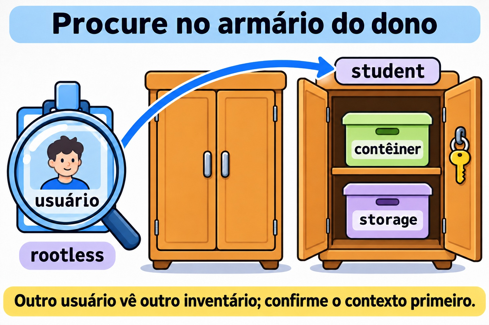
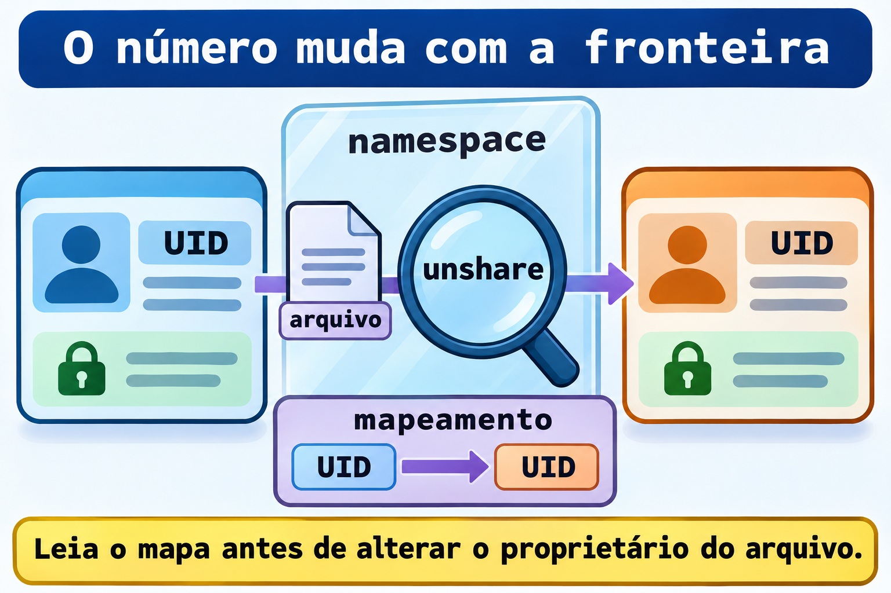

Aula 18.4 · Diagnosticar contêiner rootless
O coração desta aula: confirme o dono e relacione configuração, processo, arquivo e evento antes de corrigir o contêiner.
| Ficha | Plano de trabalho |
|---|---|
| Módulo | M18 · Podman, aula 4 de 5 |
| Quando | Semana 25 |
| Ao final | Localizar a camada de três falhas sem ampliar privilégios |
| Pré-requisitos | Serviço e conteúdo preservados da 18.3; acesso como dono |
| Duração | 80–100 minutos |
| Snapshot | m18a4-inicio e m18a4-fim somente nas VMs de estudo |
A bancada continua no usuário student, primeiro em rocky-lab e depois em debian-lab. Os comandos de Podman são sempre do dono, sem elevação.
A porta continua no loopback, e o conteúdo permanece fora do contêiner. Não conecte o serviço à rede externa para facilitar o diagnóstico.
Crie o snapshot da VM antes das quebras e confira o console. Os defeitos são restritos à bancada; nenhum mapa global de usuários será alterado.
1 · Aquecimento
Responda antes de consultar a unidade ou o inventário.
- Por que uma lista vazia de contêineres não prova que a máquina não tem contêineres?
- Qual a diferença entre serviço ativo e resposta HTTP válida?
- O número de usuário dentro do contêiner precisa coincidir com o número no host?
2 · Por que importa
Um serviço rootless não aparece no terminal do administrador. A tentativa de recriá-lo em outra conta produz outra cópia, outro storage e outra disputa de porta, sem explicar a primeira falha.
Outro chamado parece falha de rede: a unidade está ativa, o processo existe, mas a requisição expira. Um processo congelado não é um processo inexistente.
Você vai manter essas distinções observáveis. O reparo precisa ser menor que o problema e permitir repetir a prova inicial.
Ponte Windows
Uma ferramenta aberta com outra identidade pode mostrar outro perfil e outro conjunto de recursos. Confirme a identidade efetiva antes de interpretar uma ausência como perda de dados.
3 · Modelo mental


Cada dono tem seu armário de imagens, contêineres e dados internos de Podman. Usar o nome correto no armário errado continua sendo uma pergunta feita ao lugar errado.
| Evidência | Pergunta |
|---|---|
| Identidade e ambiente | Quem está consultando? |
| Ficha do contêiner | O que foi configurado? |
| Processos | O que existe agora? |
| Eventos | O que aconteceu e quando? |
| Arquivo montado | Que dado foi entregue ao processo? |
A configuração do serviço pertence ao gerenciador; o estado do contêiner pertence à execução; o conteúdo pertence ao caminho montado. Compare os três.
4 · O essencial
O diretório de execução do usuário e o barramento de sua sessão não devem ser inventados para fazer um comando funcionar. Entre diretamente como o dono por um login completo.
Não use elevação para consultar Podman como se ela mostrasse automaticamente os contêineres do usuário. Isso pode trocar o inventário e produzir outro diagnóstico.
Os arquivos /etc/subuid e /etc/subgid descrevem faixas subordinadas. Ler o mapa é diferente de reatribuir faixas de uma conta em uso.
Uma mudança global nessas faixas pode tornar o storage existente incoerente. Esta aula não faz essa mudança nem usa limpeza global do armazenamento como conserto.
O comando podman unshare abre uma visão no namespace do próprio dono. Ele não fornece root global da VM. Use-o aqui somente para ler o mapa e comparar um arquivo conhecido.
Rocky × Debian
| Leitura | Rocky | Debian |
|---|---|---|
| Acesso ao arquivo | Modo, dono e SELinux ativo | Modo, dono e controles ativos |
| Journal do usuário | Contexto do dono | Contexto do dono |
| Faixas subordinadas | Ler, não reassinar cegamente | Ler, não reassinar cegamente |
Decida 1
O inventário está vazio num terminal que não pertence ao dono. O primeiro passo é:
A. Recriar o serviço com privilégios globais. B. Apagar os diretórios de storage que parecem antigos. C. Confirmar identidade, contexto e VM, depois consultar como dono.
5 · Lab guiado
Passo 1 · Fixar o contexto e o limite da mudança
Palpite: qual informação precisa vir antes do nome do contêiner numa investigação rootless?
test "$(id -un)" = student || exit 1
test "$(id -u)" -ne 0 || exit 1
test -z "${CONTAINER_HOST-}${CONTAINER_CONNECTION-}" || exit 1
test "$(podman info --format '{{.Host.Security.Rootless}}')" = true || exit 1
case "$(hostname -s)" in rocky-lab|debian-lab) ;; *) exit 1 ;; esac
id
printf 'HOME=%s\nXDG_RUNTIME_DIR=%s\n' "$HOME" "$XDG_RUNTIME_DIR"
podman info --format '{{.Host.Security.Rootless}} {{.Store.GraphRoot}}'
systemctl --user status m18-web.service --no-pager
loginctl show-user student --all -p Linger -p SessionsSaída esperada: dono correto, inventário rootless e serviço conhecido. Um erro de conexão ao gerenciador é evidência de contexto, não motivo para criar outro serviço.
Verifique: escreva nome da VM, usuário, horário e recurso. Se um deles está incerto, pare antes das quebras.
Passo 2 · Ler a configuração real
Palpite: um nome conhecido garante imagem, rótulo e montagem corretos?
podman inspect m18-web --format '{{index .Config.Labels "io.course.module"}}'
podman inspect m18-web --format '{{.ImageName}}'
podman inspect m18-web --format '{{json .State}}'
podman inspect m18-web --format '{{json .Mounts}}'
podman port m18-web
systemctl --user cat m18-web.serviceSaída esperada: rótulo M18, imagem por referência conhecida, estado real, montagem do site e porta no loopback. Não publique uma ficha completa se ela contiver ambiente com segredos.
Verifique: a fonte do volume é o diretório persistente esperado, não uma pasta parecida nem o conteúdo interno da imagem. Compare com a fonte Quadlet.
Passo 3 · Relacionar processos e eventos
Palpite: o usuário mostrado no processo interno precisa ter o mesmo número na visão da VM?

podman top m18-web user huser pid hpid args
podman logs --timestamps --tail 30 m18-web
sudo journalctl _UID="$(id -u student)" _SYSTEMD_USER_UNIT=m18-web.service -b --no-pager -n 40
systemctl --user show m18-web.service -p ActiveState -p SubState -p Result -p NRestarts
curl --max-time 3 --fail --silent --show-error http://127.0.0.1:18080/Saída esperada: processos reais e registros do intervalo atual. Os campos de usuário do host e do contêiner podem diferir pelo mapeamento.
Verifique: relacione o momento da requisição com os eventos. Ausência de uma linha de aplicação não prova que nunca houve falha; confira intervalo, origem do log e retenção.
Passo 4 · Ler o mapa sem mudar a identidade
Palpite: a mesma propriedade numérica de um arquivo pode aparecer com outro número em outro namespace?


awk -F: '$1=="student" {print}' /etc/subuid /etc/subgid
command -v newuidmap newgidmap
podman unshare cat /proc/self/uid_map /proc/self/gid_map
stat -c '%u:%g %a %n' "$HOME/m18-lab/site/index.html"
podman unshare stat -c '%u:%g %a %n' "$HOME/m18-lab/site/index.html"Saída esperada: faixas reais do dono e uma tradução observável no mapa. Não copie números de outra máquina para tentar igualar a saída.
Verifique: explique início, faixa e quantidade usando o mapa que você leu. Se faltar faixa ou helper, preserve o storage e trate a correção como mudança administrativa planejada.
Passo 5 · Separar permissão, rótulo e montagem
Palpite: negar leitura por modo Unix é a mesma coisa que uma negação do SELinux?
namei -l "$HOME/m18-lab/site/index.html"
ls -ldZ "$HOME/m18-lab/site"
ls -lZ "$HOME/m18-lab/site/index.html"
podman exec m18-web id
podman exec m18-web sh -c 'test -r /usr/share/nginx/html/index.html'
printf 'rc=%s\n' "$?"Saída esperada: o documento é legível pela identidade efetiva da aplicação. Um campo de contexto vazio ou indisponível exige interpretar os controles ativos da distribuição, não desabilitá-los.
No Rocky com SELinux ativo, procure uma negação no intervalo do sintoma pelo procedimento de auditoria já estudado, se houver. Não fabrique uma negação quando a causa está no modo do arquivo.
Verifique: a montagem permanece somente leitura no contêiner. Torná-la gravável não é um conserto para uma aplicação que só precisa ler o site.
Passo 6 · Escrever uma conclusão reproduzível
Palpite: quantas saídas sem contexto equivalem a uma conclusão demonstrada?
Complete o quadro com o seu caso real. Registre apenas o necessário e preserve o horário.
| Campo | Sua evidência |
|---|---|
| Contexto | VM, dono e gerenciador |
| Configuração | Imagem, porta e montagem |
| Execução | Estado e processos |
| Evento | Instante e mensagem relevante |
| Dado | Caminho e leitura pelo processo |
| Limite | O que ainda não foi demonstrado |
Saída esperada: outra pessoa entende a hipótese e consegue repetir uma consulta curta que a testa.
Verifique: sua conclusão não depende de segredo, captura antiga ou número de UID presumido. Use esse quadro antes de cada reparo abaixo.
6 · Quebre e conserte
Faça uma quebra por vez e restaure antes da próxima. As guardas recusam um nome sem o rótulo da bancada. Se uma guarda falhar, pare; não remova recursos para fazê-la passar.
assert_m18() {
test "$(id -un)" = student || return 1
test -z "${CONTAINER_HOST-}${CONTAINER_CONNECTION-}" || return 1
test "$(podman info --format '{{.Host.Security.Rootless}}')" = true || return 1
test "$(podman inspect m18-web --format '{{index .Config.Labels "io.course.module"}}')" = M18 || return 1
}
assert_m18 || exit 1
UNIT="$HOME/.config/containers/systemd/m18-web.container"
test -f "$UNIT" && test -O "$UNIT" || exit 1
test -f "$HOME/m18-lab/site/index.html" && test -O "$HOME/m18-lab/site/index.html" || exit 1
test ! -e "$HOME/m18-lab/m18a4.container.good" || exit 1
cp -- "$UNIT" "$HOME/m18-lab/m18a4.container.good" || exit 1Quebra 1 · Documento sem leitura para a aplicação
Sintoma: o site deixa de entregar o documento, embora o serviço permaneça ativo.
assert_m18 || exit 1
chmod 0600 "$HOME/m18-lab/site/index.html"
curl --max-time 3 --fail http://127.0.0.1:18080/
podman logs --tail 20 m18-web
podman exec m18-web idInvestigação: compare dono e modo do documento com o usuário da aplicação. A resposta pode indicar acesso negado; registre a mensagem real e não atribua automaticamente ao firewall.
Causa: o arquivo ficou legível somente para o dono externo, enquanto a aplicação não usa essa identidade no namespace.
Conserto: restaure o modo de leitura previsto, sem conceder escrita e sem trocar o dono globalmente.
chmod 0644 "$HOME/m18-lab/site/index.html"
podman exec m18-web sh -c 'test -r /usr/share/nginx/html/index.html'
curl --retry 10 --retry-delay 1 --retry-all-errors --max-time 5 --fail http://127.0.0.1:18080/Verifique: o mesmo documento volta a responder, com o volume ainda somente leitura.
Prevenção: compare a identidade do processo antes de ampliar modos ou mudar rótulos.
Quebra 2 · Processo congelado
Sintoma: há processo e serviço ativo, mas o cliente não obtém resposta dentro do prazo.
assert_m18 || exit 1
podman pause m18-web || exit 1
podman inspect m18-web --format '{{.State.Status}} {{.State.Paused}}'
systemctl --user is-active m18-web.service
curl --max-time 3 --fail http://127.0.0.1:18080/Se a versão ou o ambiente recusar pausa rootless, registre o impedimento e não aplique alterações globais para forçar a simulação. A bancada Quadlet exige cgroup v2, mas capacidades locais ainda precisam ser conferidas.
Investigação: compare estado do contêiner, estado do gerenciador e prazo do cliente.
Causa: a execução foi pausada; a existência do processo não demonstra progresso.
Conserto: retome somente o contêiner rotulado do exercício.
assert_m18 || exit 1
podman unpause m18-web || exit 1
podman inspect m18-web --format '{{.State.Paused}}'
curl --max-time 3 --fail http://127.0.0.1:18080/Verifique: a pausa foi removida e a requisição volta a concluir.
Prevenção: tenha uma prova de resposta da aplicação além da existência de PID e unidade.
Quebra 3 · Comando de aplicação substituído
Sintoma: o serviço tenta reiniciar, mas o processo principal termina em vez de servir HTTP.
assert_m18 || exit 1
systemctl --user stop m18-web.service
sed -i '/^LogDriver=/a Exec=/bin/sh -c "exit 23"' "$UNIT"
systemctl --user daemon-reload
systemctl --user start m18-web.service
sudo journalctl _UID="$(id -u student)" _SYSTEMD_USER_UNIT=m18-web.service -b --no-pager -n 35
systemctl --user show m18-web.service -p Result -p NRestarts
systemctl --user stop m18-web.serviceInvestigação: compare o comando na fonte e na unidade gerada com a causa de saída registrada. O número de reinícios depende do momento observado; não há contagem fixa para copiar.
Causa: um comando substituto encerra deliberadamente o processo; a política de restart não corrige um comando incorreto.
Conserto: restaure a fonte conhecida, recarregue e limpe apenas o estado de falha dessa unidade.
cp -- "$HOME/m18-lab/m18a4.container.good" "$UNIT" || exit 1
systemctl --user daemon-reload
systemctl --user reset-failed m18-web.service
systemctl --user start m18-web.service || exit 1
curl --retry 10 --retry-delay 1 --retry-all-errors --max-time 5 --fail http://127.0.0.1:18080/Verifique: o comando original voltou e o site entrega o conteúdo persistente.
Prevenção: leia a primeira causa relevante da saída, não apenas a última tentativa de reinício.
7 · Armadilhas
Não altere as faixas subordinadas de uma conta para fazer uma saída numérica parecer com a apostila. A tradução real é o objeto do estudo.
Não use limpeza global, remoção de todos os contêineres ou mudança de usuário como primeiro reparo. Você perderia o contexto que precisa explicar.
Evite consultar apenas o último contêiner criado. Uma seleção explícita por nome, identidade e rótulo reduz o risco de investigar outro recurso.
Decida 2
A aplicação não lê o documento, mas o administrador consegue lê-lo no terminal. Qual prova falta?
A. Leitura pela identidade e montagem efetivas da aplicação. B. Desativação dos controles de segurança. C. Permissão de escrita total para todos.
8 · Quiz
- Por que consultar outro usuário pode mostrar outro inventário?
- O que os campos de usuário do host e do contêiner ajudam a distinguir?
- Qual a diferença entre arquivo ilegível por modo e negação de um controle adicional?
- Por que serviço ativo não garante progresso da aplicação?
- Por que mudar faixas subordinadas de uma conta existente exige um plano?
- Qual evidência permite repetir o diagnóstico depois do reboot?
9 · Lembrete
| Camada | Consulta curta |
|---|---|
| Dono | id |
| Ficha | podman inspect m18-web |
| Processos | podman top m18-web user huser pid hpid args |
| Evento | sudo journalctl _UID="$(id -u student)" _SYSTEMD_USER_UNIT=m18-web.service -b |
| Mapa | podman unshare cat /proc/self/uid_map |
Flashcards: prepare cartões sobre contexto, faixa subordinada, dono efetivo, pausa e causa de saída. Revise em D+1, D+3, D+7 e D+21.
!explica 18.4 contexto do dono, logs, inspect, top e unshare
!feynman 18.4 vou explicar por que processo existente pode nao responder
!quiz 18.410 · Checklist e fechamento
Restaure o documento em modo de leitura previsto, retire a pausa e confirme a fonte original. Preserve o site, o serviço e linger para a continuidade do módulo.
Não remova o inventário de imagens nem os backups privados das fontes como efeito automático desta limpeza. Registre quais cópias foram criadas para não confundi-las com configuração ativa.
Reboot de conferência: após corrigir as três quebras, repita o ensaio da 18.3: somente a VM, observação administrativa antes do login do dono e resposta no loopback.
case "$(hostname -s)" in rocky-lab|debian-lab) ;; *) exit 1 ;; esac
sudo rebootDepois da evidência sem login, entre novamente como dono e compare a configuração e o conteúdo com seu registro inicial. Não use uma consulta de outro boot como se fosse atual.
systemctl --user is-active m18-web.service
podman inspect m18-web --format '{{.State.Paused}} {{.State.Status}}'
podman port m18-web
curl --retry 10 --retry-delay 1 --retry-all-errors --max-time 5 --fail http://127.0.0.1:18080/
sha256sum "$HOME/m18-lab/site/index.html"- [ ] Confirmei VM, dono e contexto.
- [ ] Relacionei estado, processo e evento.
- [ ] Li o mapa sem alterar faixas globais.
- [ ] Separei modo de arquivo e controles adicionais.
- [ ] Corrigi os três defeitos e conferi após reboot.
- [ ] Preservei o serviço para a próxima aula.
Último exercício: entregue um relato de seis linhas com contexto, hipótese, consulta, observação, reparo e limite da conclusão. Cada linha precisa se apoiar numa evidência real.
Crie o snapshot de fim apenas com a bancada saudável e o diário atualizado. O snapshot não demonstra por si só que a causa foi compreendida.
11 · Na vida real
Com autorização, leia a documentação de operação de um serviço rootless. Identifique dono, origem da imagem, caminho do dado e fonte de logs. Não plante nenhum defeito fora da bancada.
Proponha uma consulta curta para cada lacuna encontrada. Se a informação contém segredo, peça uma versão reduzida em vez de copiar o ambiente inteiro para o relatório.
12 · Aprofunde quando quiser
- Leitura de processos e identidades.
- Namespace do usuário e unshare.
- Inspeção de contêineres.
- Quadlet e gerenciador do usuário.
Use a documentação da versão instalada para interpretar os campos disponíveis. Um campo ausente exige adaptar a leitura, não inventar uma saída de referência.
Soluções comentadas
Aquecimento: cada dono pode possuir outro inventário; serviço ativo não implica resposta válida; namespaces traduzem números de identidade.
Decida 1: C. A ausência só é interpretável depois de saber quem consultou e onde.
Decida 2: A. A leitura do administrador não representa automaticamente a leitura da aplicação.
Quiz 1: Porque armazenamento e recursos rootless pertencem ao contexto de cada dono.
Quiz 2: A identidade efetiva do processo nas duas visões e a tradução que precisa ser explicada pelo mapa.
Quiz 3: Modo, dono e controles adicionais são verificações independentes; uma hipótese não substitui a evidência da outra.
Quiz 4: O processo pode estar pausado ou não fazer progresso, embora o gerenciador continue considerando a unidade ativa.
Quiz 5: Porque dados existentes podem depender do mapa anterior; a mudança precisa considerar migração e recuperação.
Quiz 6: VM, dono, boot, horário, configuração, dado e resultado observável permitem repetir a hipótese.
← Aula18.3 · Contêiner como serviço · Índice das aulas · Aula18.5 · Construir imagens →